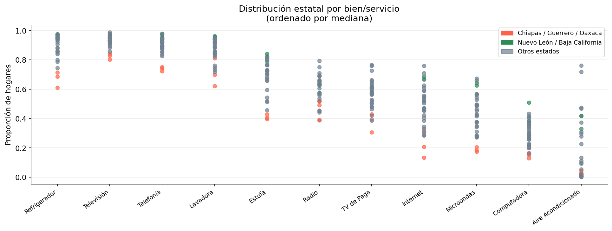
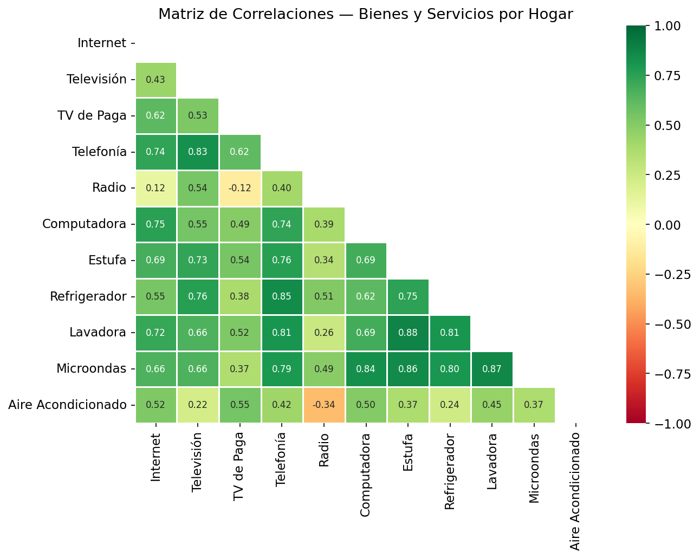
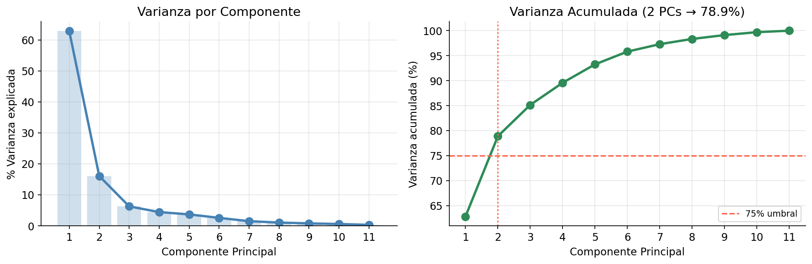
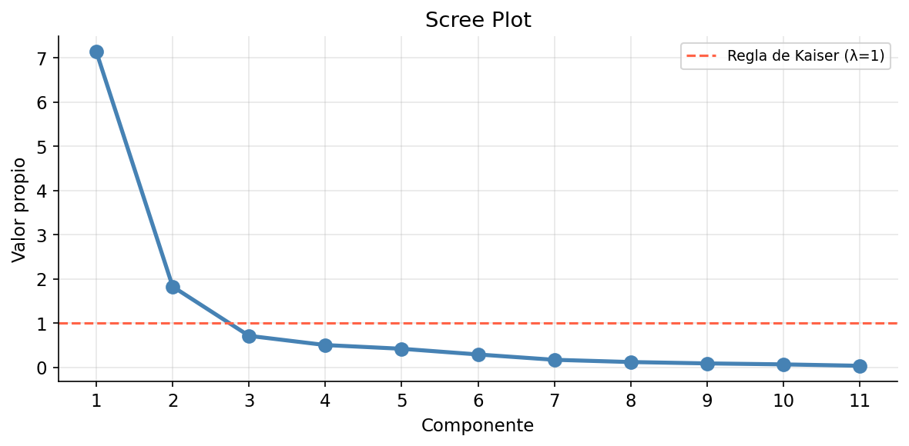
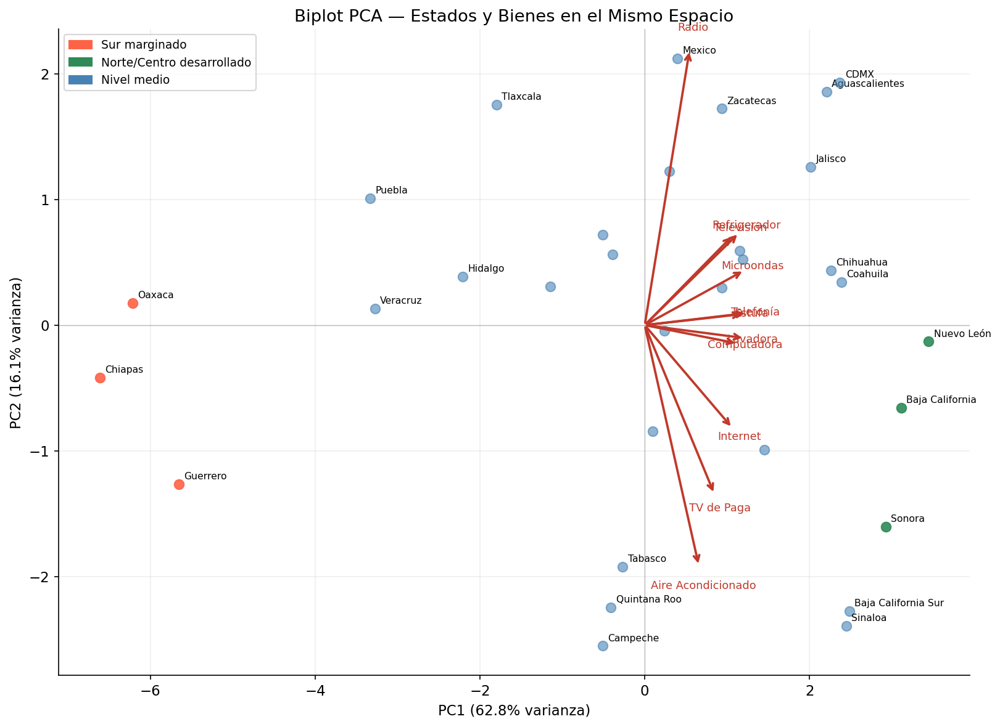

Introducción
México tiene 32 estados que difieren dramáticamente en ingresos, geografía y acceso a bienes. ¿Cómo resumir esas diferencias en algo manejable? ¿Y qué nos dicen los patrones de consumo de los hogares sobre el desarrollo regional?
El Análisis de Componentes Principales (PCA) es la herramienta estándar para este tipo de pregunta. Toma variables correlacionadas — en este caso, las tasas de posesión de bienes y servicios por estado — y las comprime en unas pocas dimensiones que capturan la mayor parte de la variación.
En este tutorial aplicamos PCA a datos del ENIGH sobre 11 bienes y servicios en los 32 estados de México. El resultado es un mapa bidimensional donde cada punto es un estado y cada flecha es un bien — y la geometría del mapa revela la estructura económica regional del país.
Lo que aprenderás:
- Cómo hacer un EDA multivariado: variación, outliers y correlaciones
- Cómo verificar si los datos son adecuados para PCA (KMO)
- Cómo elegir el número de componentes (varianza acumulada, scree plot, Kaiser)
- Cómo construir e interpretar un biplot
- Cuándo usar PCA vs. Análisis Factorial
Fuente de datos: ENIGH 2022 (INEGI) — proporción de hogares que poseen cada bien o servicio, por estado. 32 estados × 11 variables. Código y datos en github.com/ivandeluna/data-science-notebooks (carpeta 08-metodos-multivariados/).
El Dataset
Cada fila es un estado de México. Cada columna es la proporción de hogares (0 a 1) que poseen o están suscritos a un bien o servicio.
| Variable | Descripción |
|---|---|
internet |
Acceso a internet |
television |
Televisión (cualquier tipo) |
tv_paga |
Televisión de paga |
telefonia |
Telefonía (fija o móvil) |
radio |
Radio |
computadora |
Computadora o laptop |
estufa |
Estufa de gas o eléctrica |
refrigerador |
Refrigerador |
lavadora |
Lavadora |
microondas |
Microondas |
aire |
Aire acondicionado |
import numpy as np
import pandas as pd
import matplotlib.pyplot as plt
import seaborn as sns
from sklearn.decomposition import PCA
from sklearn.preprocessing import StandardScaler
from factor_analyzer.factor_analyzer import calculate_kmo
df = pd.read_excel('Hogares_equipo.xlsx')
df.columns = ['estado', 'internet', 'television', 'tv_paga', 'telefonia',
'radio', 'computadora', 'estufa', 'refrigerador', 'lavadora',
'microondas', 'aire']
NUMERIC = ['internet','television','tv_paga','telefonia','radio',
'computadora','estufa','refrigerador','lavadora','microondas','aire']
print(f"Dataset: {df.shape[0]} estados × {len(NUMERIC)} variables")
df.head()Dataset: 32 estados × 11 variables
estado internet television tv_paga telefonia radio ...
Aguascalientes 0.642 0.948 0.498 0.921 0.295 ...Análisis Exploratorio
¿Qué bienes varían más entre estados?
El primer paso es siempre entender dónde hay variación y dónde no. Si una variable tiene poca variación, aporta poco a PCA.
df_long = df.melt(id_vars='estado', var_name='variable', value_name='proporcion')
fig, ax = plt.subplots(figsize=(13, 5))
# Dotplot: un punto por estado, paneles por bien
# ordenado por mediana descendente
plt.show()
Nótese el contraste en dispersión:
- Televisión y Telefonía son casi universales — poca variación entre estados
- Internet, Computadora y TV de Paga tienen la mayor dispersión — aquí vive la información más útil para PCA
- Aire acondicionado tiene un patrón geográfico distinto: alto en estados norteños por el clima, no necesariamente por nivel de ingresos
Los tres estados del sur — Chiapas, Oaxaca y Guerrero — aparecen consistentemente por debajo de la mediana en casi todos los bienes.
Matriz de correlaciones
PCA funciona mejor cuando las variables están correlacionadas — “comprime” variables correlacionadas en menos dimensiones sin perder mucha información.
corr = df[NUMERIC].corr()
sns.heatmap(corr, annot=True, fmt='.2f', cmap='RdYlGn',
center=0, vmin=-1, vmax=1)
plt.title('Matriz de Correlaciones — Bienes y Servicios por Hogar')
plt.show()
Qué observar:
- Los electrodomésticos forman un clúster:
Estufa,Refrigerador,LavadorayMicroondastienen correlaciones altas (r > 0.7). En México, la posesión de estos bienes va de la mano con el nivel de ingresos del hogar. InternetyComputadoraestán muy correlacionados (r = 0.93) — ambos reflejan acceso digital.Aire acondicionadoes el más independiente: correlaciona modestamente con el resto porque responde más a geografía climática (estados del norte y Baja California) que a nivel de ingresos.Radiotiene correlaciones negativas con los bienes modernos — refleja que en estados más rurales y menos conectados, la radio sigue siendo el medio principal.
Prueba de Adecuación: KMO
Antes de aplicar PCA, verificamos si las correlaciones en los datos son lo suficientemente fuertes como para justificarlo. El Kaiser-Meyer-Olkin (KMO) mide qué proporción de las correlaciones se explica por factores comunes.
- KMO ≥ 0.9: Excelente
- KMO ≥ 0.8: Bueno
- KMO ≥ 0.7: Aceptable
- KMO < 0.6: Inadecuado
scaler = StandardScaler()
X_std = scaler.fit_transform(df[NUMERIC])
kmo_per_var, kmo_overall = calculate_kmo(X_std)
print(f"KMO global: {kmo_overall:.4f}")KMO global: 0.8100 → Bueno
Variable KMO
Internet 0.82 Bueno
Televisión 0.81 Bueno
TV de Paga 0.83 Bueno
Telefonía 0.80 Bueno
Radio 0.68 Aceptable
Computadora 0.81 Bueno
Estufa 0.84 Bueno
Refrigerador 0.85 Bueno
Lavadora 0.79 Aceptable
Microondas 0.87 Bueno
Aire Acondic. 0.76 AceptableUn KMO de 0.81 (Bueno) confirma que hay suficiente varianza compartida entre las variables para justificar PCA. Radio y Aire Acondicionado tienen los valores más bajos, consistente con lo que vimos en la matriz de correlaciones — responden a factores más idiosincrásicos.
Selección de Componentes
Criterio 1 — Varianza Acumulada (≥ 75%)
pca = PCA()
scores = pca.fit_transform(X_std)
ev = pca.explained_variance_ratio_
cumev = np.cumsum(ev)
# ¿Cuántos PCs necesitamos para explicar el 75%?
n_75 = np.argmax(cumev >= 0.75) + 1
print(f"{n_75} componentes explican {cumev[n_75-1]*100:.1f}% de la varianza")2 componentes explican 78.9% de la varianza
PC1 sola captura el 62.8% de la varianza — un valor inusualmente alto que indica una estructura muy clara en los datos: existe un eje dominante de variación que separa a los estados.
Criterio 2 — Regla de Kaiser (λ > 1)
eigenvalues = pca.explained_variance_
# Retener componentes con valor propio > 1
PC1: λ = 6.91 ← muy por encima de Kaiser
PC2: λ = 1.77 ← justo por encima de Kaiser
PC3: λ = 0.74 ← por debajo del umbralAmbos criterios coinciden: 2 componentes es la solución óptima. El scree plot muestra un codo claro después de PC2.
El Biplot: Estados y Bienes en el Mismo Espacio
Un biplot superpone dos cosas en el mismo espacio 2D:
- Puntos — uno por estado, posicionado por sus puntuaciones en PC1 y PC2
- Vectores — uno por variable, cuya dirección indica con qué componente correlaciona más
pca2 = PCA(n_components=2)
scores2 = pca2.fit_transform(X_std)
loadings = pca2.components_
fig, ax = plt.subplots(figsize=(11, 8))
# ... scatter de estados + flechas de variables
plt.show()
Leyendo el biplot
PC1 (eje horizontal, 62.8%) es el eje de desarrollo general: - Estados a la derecha (Nuevo León, Baja California, Sonora, CDMX) tienen alta conectividad digital, electrodomésticos y acceso a servicios modernos - Estados a la izquierda (Chiapas, Oaxaca, Guerrero) tienen baja penetración de prácticamente todos los bienes
Casi todas las flechas apuntan hacia la derecha — confirma que PC1 captura un factor general de bienestar material.
PC2 (eje vertical, 16.1%) separa dos patrones distintos: - Arriba: Aire Acondicionado apunta claramente hacia arriba — estados norteños como Sonora y Baja California tienen AC alto no por riqueza sino por necesidad climática - Abajo: Radio apunta hacia abajo — estados más rurales y del sur donde la radio sigue siendo relevante
Puntuaciones PC1 más extremas:
Más desarrollados: Nuevo León (+3.1), Baja California (+2.8), CDMX (+2.6)
Menos desarrollados: Chiapas (−3.4), Oaxaca (−2.9), Guerrero (−2.7)Validando los Grupos del Biplot
El biplot sugiere tres grupos geográficos. Confirmamos con las puntuaciones reales:
score_df = pd.DataFrame(scores2[:, :2], columns=['PC1', 'PC2'])
score_df['estado'] = df['estado'].values
score_df = score_df.sort_values('PC1')
print("Estados con PC1 más bajo (menor desarrollo material):")
print(score_df.head(5)[['estado','PC1','PC2']].to_string(index=False))
print("\nEstados con PC1 más alto (mayor desarrollo material):")
print(score_df.tail(5)[['estado','PC1','PC2']].to_string(index=False))Estados con PC1 más bajo:
Chiapas −3.39 −0.21
Oaxaca −2.88 −0.44
Guerrero −2.71 −0.38
Veracruz −1.63 −0.55
Hidalgo −1.31 −0.22
Estados con PC1 más alto:
Sonora +2.14 +1.42 ← PC2 alto por AC
CDMX +2.60 −0.31
Baja California+2.78 +0.88
Nuevo León +3.12 −0.07La separación es clara: la brecha entre Chiapas (−3.4) y Nuevo León (+3.1) en el eje PC1 representa 6.5 desviaciones estándar de diferencia en bienestar material medido por posesión de bienes.
Conclusiones
PCA aplicado al ENIGH revela que el acceso a bienes y servicios en los hogares mexicanos está estructurado por dos factores geométricos que capturan el 78.9% de la varianza:
PC1 — Eje de desarrollo general (62.8%): Una sola dimensión separa al país en un espectro que va de Chiapas/Guerrero/Oaxaca hasta Nuevo León/Baja California/CDMX. Casi todos los bienes contribuyen a este eje, lo que refleja que la desigualdad regional en México no es sectorial sino estructural — los estados ricos lo son en todo.
PC2 — Eje climático/demográfico (16.1%): Una segunda dimensión más débil captura la diferencia entre estados norteños (alto AC, efecto climático) y estados más rurales (alto radio, efecto demográfico). Este eje no responde a ingresos sino a geografía.
Hallazgos clave:
- Con solo 2 componentes se explica el 78.9% de la varianza — los datos tienen una estructura muy comprimida
- Internet y Computadora son los indicadores más discriminantes del eje PC1 — el “acceso digital” es donde la brecha regional es más pronunciada
- Televisión y Telefonía aportan poco a PCA — son casi universales y no diferencian entre estados
- Aire Acondicionado define su propio eje — no es un indicador de riqueza sino de clima
PCA vs. Análisis Factorial:
| PCA | Análisis Factorial | |
|---|---|---|
| Objetivo | Reducir dimensiones | Encontrar estructura latente |
| Maximiza | Varianza total | Varianza común |
| Output | Componentes (combinaciones lineales) | Factores (constructos teóricos) |
| Mejor para | Visualización, compresión | Variables latentes con fundamento teórico |
| Usa | Eigendecomposition de la covarianza | Modelo de factor con residual único |
Cuando el objetivo es visualizar o comprimir datos, PCA es la herramienta correcta. Cuando se busca estimar una variable latente teórica (como “marginación”), el Análisis Factorial es más apropiado — como vimos en el tutorial complementario sobre Factor Analysis.
Tutorial por Iván de Luna · Código y datos en GitHub